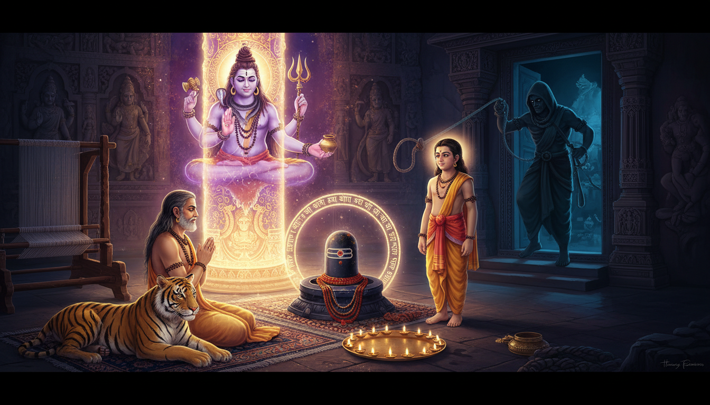

Most parents who come to a ritualist with a sick child ask for the same thing: more time. Almost none of them ask the question that the sage Mrikanda asked first, and that omission is why, in the traditional reading, so many santana and ayushya rites fail. Mrikanda was offered a bargain by Shiva himself, and the choice he made has been argued over by every commentator who has touched the story since. He chose a son who would be excellent, and who would die at sixteen, over a son who would be dull and live long.

He is remembered for that choice — not for the death. The rite that carries his name is not a rite for postponing death. It is a rite for fixing the quality of a life first, and then extending its term, in that order. Get the order wrong and the practice becomes, in the tradition's own blunt language, a prayer for a longer cage.
This is the working manual for Mrikanda's sixteen-day rite — its story, its arithmetic, and the form in which it survives.
Who Mrikanda Was
Mrikanda is a small figure in the genealogies and a large one in practice. The Vishnu Purana places him as the son of Vidhatri — himself a son of Bhrigu and Khyati — and of Niyati, one of the two daughters of Meru. The Markandeya Purana names his wife Manasvini; other strands of the tradition call her Marudmati. His son is Markandeya, the chiranjivi, the deathless boy, and the Purana that bears the son's name is the text in which the father's bargain is preserved.
Two details about Mrikanda are almost never repeated in modern retellings, and both matter for the rite.
The first is that he is venerated as the founder of weaving. The tradition credits him with the loom, and says the gods, grateful, granted him two boons — a tiger and a giant. The giant disobeyed him and was killed at once; the tiger obeyed him and lived. In Koshta weaving communities the memory is still active folklore: if you meet a tiger in the jungle, it is enough to speak Mrikanda's name and it will not attack you. He is a protective figure at the threshold, not a distant seer.
The second is that his name itself carries mṛga — the wild creature, the animal. A rishi whose name means the beast, who owns a tiger, whose son is the one being in the canon that death could not take: the whole story is built on the boundary between the animal body and the deathless one. That boundary is exactly where this rite operates.
The Bargain Itself
The Markandeya Purana and the Mahabharata's Anushasana Parva agree on the shape of the episode. Mrikanda and Manasvini performed long penance to Shiva for a child. Shiva appeared and offered a choice, and the offer was deliberately cruel in its precision:
- a son who is righteous, wise, and short-lived;
- or a son who is dull-witted and malicious, but long-lived.
There was no third option. This is not a story about a god being difficult. It is a statement of a law the tradition takes as given: quality of life and length of life are separate currencies, and they are not exchangeable at the moment of asking. What you ask for is what you get, and you must name which one you are asking for.
Mrikanda chose the first. Markandeya was born, mastered the Vedas and the Shastras, and was a devotee of Shiva from childhood. Shortly before his sixteenth year his parents told him the terms. He did not appeal the sentence and he did not ask his father to renegotiate. He began to practise.
What Markandeya Did With the Sixteen Years
On the day appointed for his death, Markandeya was worshipping Shiva in the aniconic form — the lingam. Yama's messengers could not approach him; the boy's devotion was, in the text's phrase, a shield. So Yama came himself, and threw his noose (pāśa) around the boy's neck. The noose also fell around the lingam, because Markandeya was holding it.
Shiva came out of the lingam. He struck Yama down. At the plea of the gods he restored Yama to life, and set the condition that has defined the story ever since: Markandeya would remain sixteen years old forever. This is the moment the tradition names Kalantaka — the destroyer of time and of death — and it is the form invoked in this rite, not the gentle Pashupati.
Three things in that sequence are the ritual instructions, and they are easy to miss because they are described as events rather than as method:
- He held the lingam at the moment of the noose. The embrace (alingana) is the act. Not prayer at a distance — contact.
- The noose fell on the lingam too. Death's instrument touched the deity, and the deity answered. In the rite, the object that stands for the person's term is deliberately placed against the lingam, so that the claim of death lands on Shiva first.
- The result was not "long life." It was "stopped time." Markandeya does not age. What was granted was not an extension of the sentence but a suspension of the clock — and that is why this rite is used for children in danger and for anyone whose life has stopped moving forward while the body keeps ageing.
The Sixteen: Why That Number Is the Whole Rite
Sixteen is not a detail. It is the rite's measuring rod, and it appears from four directions at once.
The sixteen kalas. The moon is said to hold sixteen digits (ṣoḍaśa-kalā). Fifteen are visible and wax; the sixteenth is amrita-kala, the digit of nectar, which is never seen. A human being is built on the same pattern. Markandeya was stopped at sixteen — the count at which the last visible digit is full and the deathless one begins. He was, quite precisely, frozen at the threshold of the sixteenth.
The sixteen tithis. From pratipada after the new moon to purnima there are sixteen lunar days. This is the rite's calendar, and it is the reason the practice is sixteen days long and not fourteen or twenty-one.
The sixteen samskaras. The classical count of life-cycle rites is sixteen, from garbhadhana to vivaha. A rite for a child's term is performed in the grammar of samskara — it is a re-making of the person's entry into life, not a repair of a fault.
The sixteen years. The term itself. The number the curse named is the number the remedy counts.
So the practice is sixteen consecutive sunrises, sixteen threads, sixteen knots, sixteen offerings — ending on the full moon, when the sixteenth digit is at its fullest in the visible world.
The Working Form: Mrikanda's Sixteen-Day Ayushya Rite
This is the sequence as it survives in household practice, adapted so that it can be done at home by a parent on behalf of a child, or by an adult for their own term. It runs from the day after amavasya to the following purnima.
Requirements. A clean east or north-east space. A Shiva lingam — a small one of stone, crystal, or even a banalinga from the Narmada; a saligrama is not used for this rite. A copper vessel of water. Sixteen white threads of cotton, each about a hand-span long. Sixteen knots' worth of raw turmeric root. Black sesame. Ghee and a ghee lamp. White flowers — dhatura if obtainable, otherwise white jasmine or white lotus. A tiger image is traditional but optional; if used, it sits at the door facing outward, which is exactly where Koshta households still keep it.
Do not begin on ashtami or chaturdashi; begin on pratipada, tritiya, or panchami. A Monday start is preferred. The final day must fall on purnima — if the month's count does not align, begin one day later and let the rite run sixteen days regardless, finishing on the full moon of the next fortnight rather than compressing it.
Step 1 — Name the quality before you name the years (the Mrikanda clause)
This is the step that distinguishes the rite from every generic longevity prayer, and it is the one most often skipped.
At the lamp, before any mantra, state aloud the quality you are asking to be protected: "May he be truthful. May she be steady in her mind. May he keep his word." Name one, or at most three. Do not name wealth, do not name status.
Only after the quality is spoken do you state the term: "and may the years be given." The order is not stylistic. Mrikanda was offered either quality or duration, and the tradition holds that a request made in the reverse order — years first, then virtue — reproduces the second option in the bargain: a long life without intelligence. Say the quality first, and the years are asked for as the container of something worth containing.
Step 2 — Wind the sixteen threads
Take the sixteen cotton threads. Tie them into a single cord with sixteen knots, saying at each knot:
āyuṣyaṃ te dadāmi — "I give you life."
Wind the cord around the copper vessel's neck, left to right, three times. This is sūtra-bandha, the thread-binding, and it is old: the same grammar appears in the raksha-sutra rites and in the tantric kalpa texts for binding a term that is slipping. The cord is not a magical object. It is a counter — the tradition's way of making an abstract request physical, so that sixteen days cannot be silently reduced to nine.
Step 3 — Seat the term against the lingam
Place the photograph or the written name and birth details of the person on a clean cloth, and set the lingam directly upon it, or against it. This is the alingana — the embrace Markandeya performed. Say once:
mṛtyu-pāśaṃ chindhi — "cut the noose of death."
Then pour water over the lingam continuously for as long as you can hold the vessel — one full copper-vessel pour, without stopping. The continuous pour is the rite's one physical austerity and it should not be delegated to a tap.
Step 4 — The Mahamrityunjaya, 108 times, facing the lingam
The core count is Rigveda 7.59.12, the verse of the three-eyed Rudra:
tryambakaṃ yajāmahe sugandhiṃ puṣṭivardhanam | urvārukam iva bandhanān mṛtyor mukṣīya mā'mṛtāt
"We worship the three-eyed one, fragrant, who increases fullness; may he release me from death as the cucumber is released from its stem — and not from immortality."
108 repetitions, low and even, counted on the right hand. The verse's image is the mechanism and it is worth sitting with: the cucumber is not torn from the vine, it slips from it. Nothing is broken. The bond simply stops holding. That is the action this rite asks for — not a battle with Yama, but a loosening.
Step 5 — Untie one knot
On each of the sixteen days, after the count, untie exactly one knot of the cord, and say:
ekaṃ varṣaṃ dadāmi — "one year, I give."
Sixteen knots over sixteen days. On the sixteenth day the cord is free, and it is burned in the ghee lamp, not thrown away. The ash is mixed with sesame and given to flowing water.
Step 6 — The sesame and the tiger's share
Each day, a handful of black sesame is offered into water — never on stone, never indoors. On the final day, the bhuta-rin repayment is made: feed a child of about the age the rite was performed for, or, where that is not possible, feed a dog or a crow at sunrise and speak no word while it eats.
The tiger belongs here too. Mrikanda's tiger obeyed and lived; his giant disobeyed and died. The tradition reads that as a statement about which kind of force a household should keep at its door — the obedient, watchful one. A tiger image at the threshold, or simply the speaking of Mrikanda's name at a moment of sudden danger, is the folk survival of the rite, and it is not a lesser form. It is the same protection, compressed.
Step 7 — The full moon close
On purnima, after the last knot is burned, do the alingana once more — hold the lingam against the heart, and say nothing at all for sixteen breaths. Then speak the quality you named on day one, in the same words. Not the years. The quality.
The tradition's reason is unsentimental: the years were the easy half of the bargain. The quality was the half Mrikanda actually chose, and the half that the sixteen days are for.
Timing It to the Sky
The rite is transit-sensitive in four specific ways.
Jupiter — the putra-karaka. Jupiter is the significator of children, and of the 5th house. Do not begin while Jupiter is combust (within roughly eleven degrees of the Sun), retrograde in the 8th from the natal Moon, or transiting the 6th/8th/12th from the Moon. If Jupiter is strong and transiting the 5th, 9th, or 11th from the Moon, the sixteen-day count may be shortened to the ardha measure of eight days, ending on ashtami of the waxing fortnight.
Saturn — the ayush-karaka. In the classical ayurvedic reading of the chart, the 8th house is the house of the term of life, and Saturn is its lord by nature. When Saturn transits the 8th from the natal Moon, or sits in shadashtaka (1/3, 3/10, 5/9) to it, the tradition doubles the practice: sixteen days becomes a full mandala of forty-eight days, with the Mahamrityunjaya count kept unbroken. Saturn does not answer intensity. It answers persistence, which is why this rite is built on an unbroken daily count and not on one large ritual.
The Moon — the kala-bearer. The final day should be purnima, and on that day the Moon should not be in the 8th from the natal Moon. If it is, shift the start by one fortnight rather than accept the collision; the sixteen tithis are a fixed frame, and the frame can be moved.
Ketu and the 8th lord. Where the 8th lord is conjunct Ketu, or Ketu occupies the 5th, the rite is performed for the child and the parent together — the cord is wound around the parent's wrist first, then the child's. The tradition treats a repeated term-failure across generations as a Ketu pattern, and Ketu responds only to repetition of a single correct act.
What This Rite Is Not
It is not a substitute for medical care. This matters more here than in any other rite in this series, because the rite concerns children and the term of life. The Mahamrityunjaya is recited alongside treatment, in the same room as the medicine, and the tradition's own physicians — Charaka, Sushruta — insist the physician is an instrument of the same providence. A parent who substitutes this practice for a doctor has misunderstood the story: Mrikanda did not refuse the world, he went to Shiva within it.
It is not a contract against death. Markandeya was not granted more years. He was granted stopped time, which is a different and stranger gift, and it was granted after he had already spent sixteen years becoming someone worth preserving. The order is the teaching.
And it is not a rite to perform for an adult without their consent. The cord is wound around a wrist. The wrist should know.
Mrikanda's real instruction is the one thing he is criticised for: he asked for the excellent son and accepted the short term, and then his son — not his prayer — overturned the term. The father's job in this rite is to name the quality and hold the thread. The rest is done at the lingam, by the one whose life it is.
mṛtyu-pāśaṃ chindhi. Cut the noose. Not the thread.
Sources
No source URLs were returned by NotebookLM for this run.